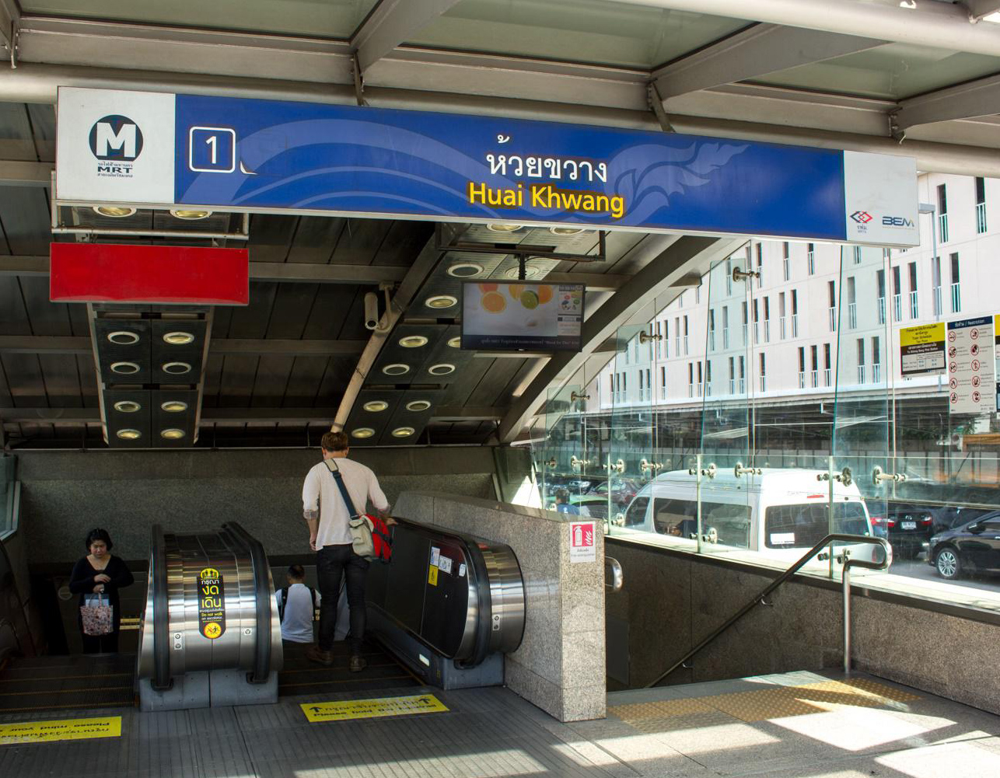

หน้าหลัก
ร้านอาหารไทย
ร้านอาหารจีน
เครื่องดื่ม/คาเฟ่
บาร์/ผับ
 ปักหมุดร้านอาหารย่านห้วยขวาง
ห้วยขวาง สถานที่ที่รายล้อมไปด้วยที่พักอาศัยของเหล่าคนทำงานใจกลางเมืองในย่านรัชดาฯ-ห้วยขวางได้ชื่อว่าเป็นเมืองที่ไม่เคยหลับไหล ศักยภาพของทำเลนี้ นอกจากจะเป็นแหล่งที่อยู่อาศัยของคนรุ่นใหม่ที่ต้องการที่พักอาศัยใกล้ออฟฟิศของตัวเองยังมีร้านอาหารอร่อย ๆ และคาเฟ่บรรยากาศดี ที่คอยรองรับวันธรรมดาของเหล่าคนทำงาน เติมเต็มความสุขหลังเลิกงาน และสร้างวันหยุดสุดสัปดาห์ที่พิเศษ อีกหนึ่งความโดดเด่นของห้วยขวาง ที่เป็นเอกลักษณ์อีกอย่างหนึ่งของย่านนี้ โดยเราจะสังเกตได้จากร้านอาหารจีนที่กระจายตัวอยู่รอบ ๆ จึงเป็นย่านที่รองรับชาวเอเชียหลากหลายเชื้อชาติไปในตัว